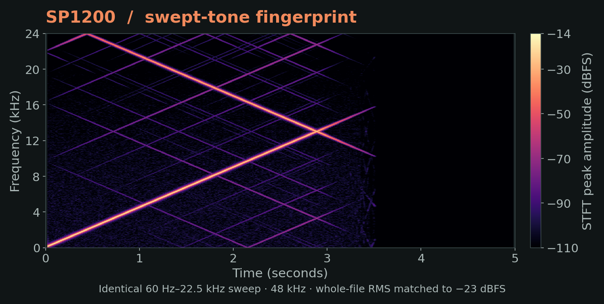
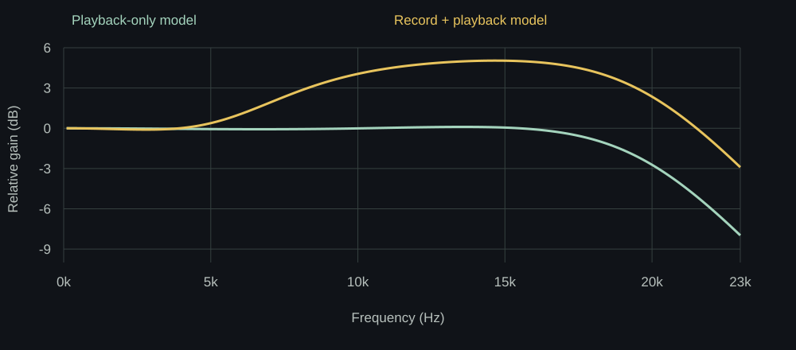

JR EMUL / SHARED ENGINE SOUND LAB
See what the
signal becomes.
A dedicated place for deeper comparisons: spectral detail, soft clipping, circuit families and response measurements. The sampler core is shared with the latest JR FX development builds.
ACTUAL SOFTWARE OUTPUT / CLEAR TEST CONDITIONS
Different views.
Different questions.
The musical comparison uses a clean pre-firmware source and retains each model’s natural output gain. The sweep and soft-clip test figures use their own controlled analysis conditions, listed with each view.
Same source. Different conversion paths.
Watch the frequency move.
TIME × FREQUENCY
What changes across the band.
OUTPUT PSD DIFFERENCE / SAME INPUT
Read the two views together. The sweep makes conversion images and bandwidth visible. The Amen Break spectrum shows that behavior on a supplied 48 kHz / 24-bit stereo pre-firmware source. The file predates the project’s low-rate, 12-bit firmware conversion.
Keep the test conditions in view. Sampler drive, SOFT CLIP and ANALOG are off here. SP uses RAW output. The software’s complete record/playback path is measured, including S950 recording emphasis.
Push the peak. Keep the shape.
Round the shoulder.
Change the harmonic balance.
SOFT CLIP adds drive into a rounded peak transition. Quieter parts retain a nearly linear shape; peaks bend progressively as you push harder. It is a creative stage with its own amount, alongside the sampler model’s conversion character.
From straight line to rounded peaks.
PRODUCTION SHOULDER
Hot-input demonstration: 997 Hz sine at −1 dBFS peak through the MPC3000 software model. All four displays are matched to −23 dBFS RMS.

Showing production SOFT CLIP +6 dB.
Follow the behavior inside the path.
More than a rate
and a bit depth.
The sample clock and converter are only part of the sound. We also model the surrounding bandwidth, reconstruction, filter response and optional nonlinear output stage. Each has a distinct role.
The input RC network shapes what reaches the converter. The output model distinguishes a fixed RC color from the SSM2044-family four-pole VCF behavior. DYNAMIC follows signal activity with deliberately restrained cutoff movement; RAW keeps the conversion character more exposed.
We treat the control response and gentle saturation as separate behaviors. This keeps the output character useful as a sampler finish, with subtle movement rather than a sweeping-filter performance effect.
The six-pole playback model follows the MF6-family filter architecture with fixed section damping. The sampler’s playback compensation is considered together with the DAC hold, while recording emphasis stays separate.
Phase compensation helps retain the intended analogue-style response after discretization. The standalone S950 output filter uses the six-pole filter core; it does not add the sampler’s recording emphasis or playback compensation.
A wave-digital model couples resistance, capacitance and a diode-pair nonlinearity. The circuit state carries from sample to sample, so the behavior depends on both frequency and level.
This optional shared JR voicing takes the PCM67/69A output-network family as a starting point, then adds a JR diode stage, musical amount scaling and mix. It is distinct from the SOFT CLIP shoulder and is not claimed to be the exact output circuit of every sampler.
Showing SP1200 signal-path anatomy.
Conceptual signal-flow diagrams. Symbols identify the modeled circuit families; they are not component schematics or transistor-level replicas. Numerical implementation and musical calibration remain JR’s independent work.
Detailed measurement conditions
The sweep and drum spectrum answer different questions. The musical comparison uses a 48 kHz / 24-bit stereo pre-firmware Amen Break source. Every model receives identical input gain, with no output normalization. These plots retain natural level changes. The sweep is a separate generated 48 kHz diagnostic.
For controlled analysis, swept-tone and SOFT CLIP diagnostic figures use fixed whole-render matching to −23 dBFS RMS. That matching is not applied to the Amen music plots or listening demos. Filter-response plots use their stated small-signal normalization.
Detailed traces show software output, not physical hardware captures. Conversion images, quantization products and nonlinear harmonics are retained where present. Noise-free or image-free output is not a universal goal for a vintage character processor.
SMALL-SIGNAL RESPONSE
The contour underneath.
This view isolates each sampler model’s main frequency response. Curves are normalized at 100 Hz, with harmonic and alias products excluded. It answers a different question from the full musical spectra above.
Showing all five software models.
48 kHz render, −18 dBFS sine input, TONE MAX, SP RAW, ASR normal clock; drive, SOFT CLIP and ANALOG off. Complete record/playback software paths, not hardware captures.
S950: recording and playback are separate.
Recording emphasis and playback filtering are distinct parts of the model. The playback curve includes a nominal DAC-hold approximation; the full curve adds recording emphasis.

Analytical software model illustration, normalized at DC. These are not physical-unit measurement overlays.